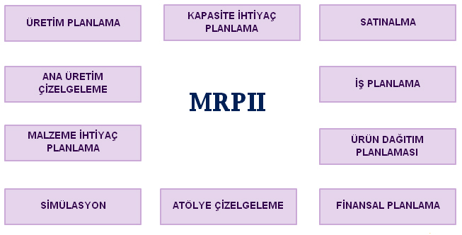

MRP II ve Sonsuz Kapasite Planlama
MRPII, işletme içindeki planlama faaliyetlerinin modüller olarak bir araya getirilip modüller arasındaki iletişimin tam olarak sağlandığı bir sistemdir.
MRPII planlama sistemi finansal bilgilerin bir kısmının oluşturulmasını sağlayarak finansal planlama faaliyetlerine katkıda bulunur. MRPII’nin sağladığı finansal bilgiler stok seviyesi tahminleri, işçilik ücretleri, fazla çalışma maliyetleri, malzeme maliyetleri vs. olarak özetlenebilir. Bu finansal bilgiler diğer fonksiyonlar tarafından sağlanan bilgiler ile birleştirilerek tam bir finansal planlama hazırlanmış olur. MRPII’nin sağladığı bilgilerin tam bir finansal planlamaya yetecek bilgiler olmadığı ve aynı zamanda MRPII sisteminin kar-zarar tablosu ya da bilanço hazırlamak gibi bir amacı olmadığı gözden kaçırılmamalıdır. Ancak MRPII, finansal planlama faaliyetinin ihtiyaç duyduğu bir kısım verileri toparlayarak organize edip finansal planlamayı gerçekleştiren kişi yada bölümlere gönderir. (Landvater, Gray, 1989; 181)
SetCRM Üretim Yönetimi ile şirket kaynaklarını planladığınız şekilde kullanarak siparişe veya stoğa üretim yapabilir, malzeme ihtiyaç listesini tanımladığınız reçete, iş istasyonları, iş süreçleri, ürün ağaçlarına bağlı iş emri bazında veya sipariş bazında alabilirsiniz. Üretim modülleri, el terminali, IPAD gibi mobil cihazlar ile istenildiği noktada barkod, lot ve seri no gibi takip sistemleri ile takip edilebilir. SetCRM farklı yaklaşımıyla her bir ürününüze kolaylıkla sınırsız sayıda ağaç oluşturabilirsiniz. Özellikle siparişe üretim yapan kuruluşlar, ek özellikleri kullanarak her bir sipariş için standart ürün ağacını değiştirmeden farklı ürün ağaçları, ek özellikleri oluşturabilirler. Bu sayede ürünün her farklı versiyonu için ayrı ayrı ürün ağacı ve stok kodu tutmak yerine daha kısa zamanda ve daha basit bir şekilde ürünün özellikleri oluşturulur. Bu sayede üretimdeki ana ve ara katkı maddelerinin takibi rahatlıkla yapılır. İş emri bazında malzeme ihtiyaç listeleri alınabilir.
Temel Modüller
